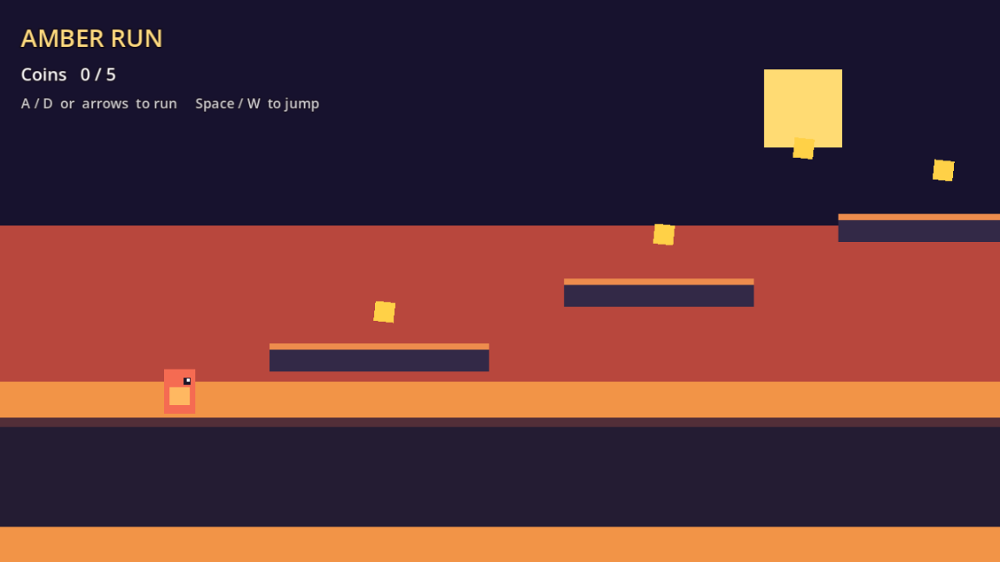
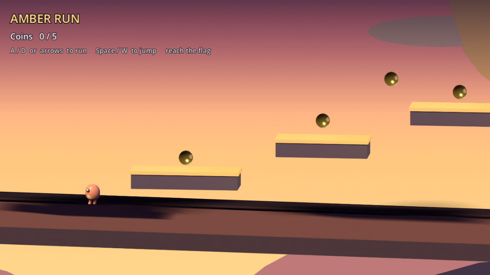

A short sunset platformer. Collect coins, reach the flag, try not to fall.

Original
The first demo: ColorRect sunset, coral runner, five coins.

Remake
Same scroller, Blender-rendered assets, waving flag, layered sky.